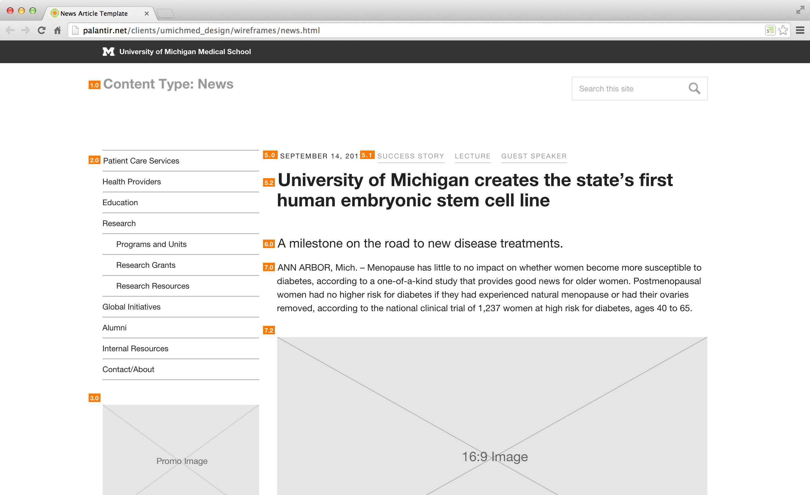
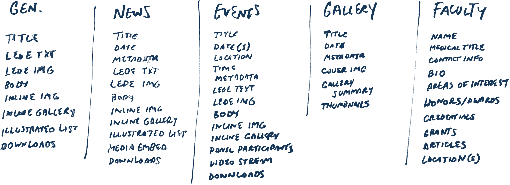
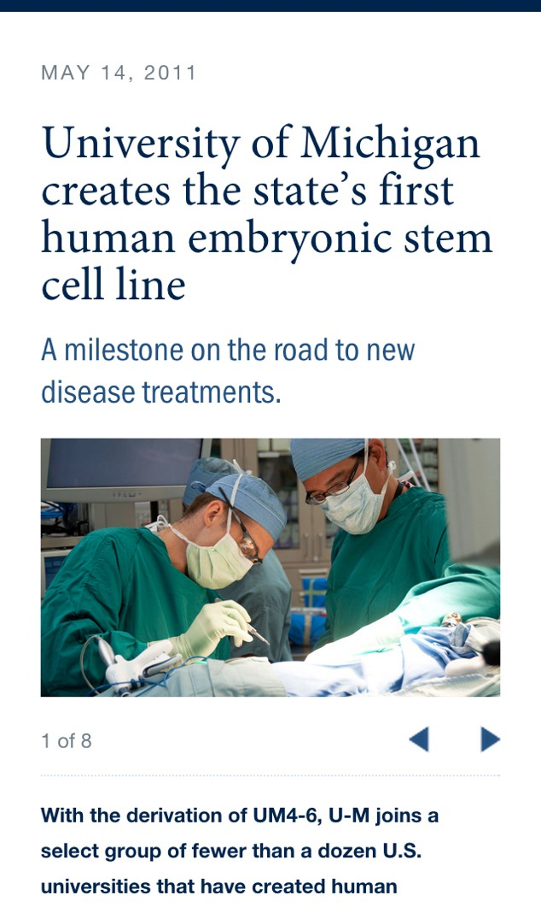
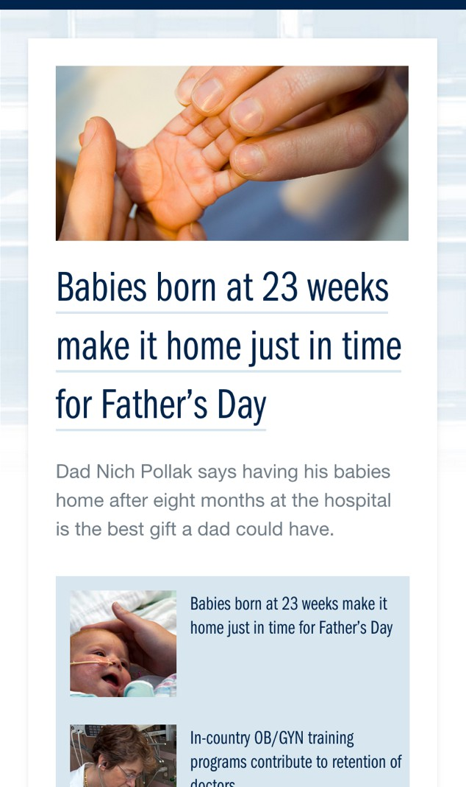
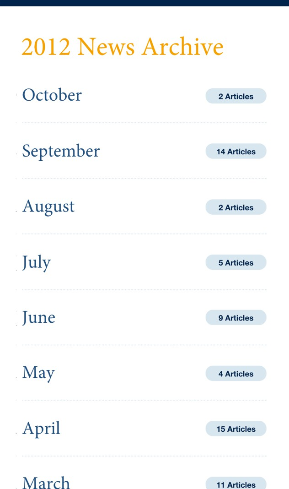
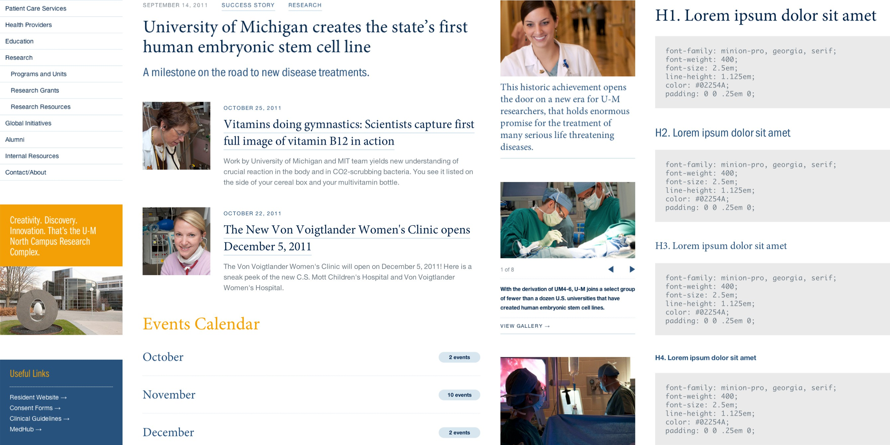

<div class="post">
	<article class="post-content">
		{% include component__site-header-new.html %}	

		<div class="l-container">
			<header class="l-post-header post-header">
				<h3 class="eyelash">{{ page.title }}</h3> 
				<h1 class="page-title" style="color: {{ page.color2 }}">{{ page.summary }}</h1>
			</header>

			<figure>
				
			</figure>

			<div class="l-column">	
				<p>Back in October of 2011, <a href="http://www.palantir.net/blog/scalable-navigation-patterns-responsive-web-design">Palantir.net</a> was hired by University of Michigan Medical School to design a system of responsive page templates for their departmental websites. These templates were to be part of an internal rebranding effort, that would involve the migration of all department level sites to a common Drupal 7 environment.</p> 
				<p>At Michigan, different types of departments have very different needs. These “very different needs” ultimately translated to designing a system of sustainable design components that could be swapped in and out of play depending on the on needs of the department’s content. This approach would allow our clients to build out individual department sites that looked related to one another while still providing each department a reasonable amount of flexibility. By embracing this idea at the very beginning of our process, fellow designer <a href="http://www.pgrady.com">Patrick Grady</a> and I were able to steer the things in the right direction.</p>
			</div>

			<div class="l-column">			
				<p>Another challenge was simply explaining the concept of responsive design to our client. Our client team knew that they wanted the system to be mobile friendly, but they had never worked on a responsive design before — after all it was early 2011 and “responsive web design” was a buzzword with few real world examples. In order to address this, Patrick and I decided to make a change to our typical design process — get into the browser as fast as possible.</p>
			</div>
			<figure>
				
			</figure>
			<div class="l-column">			
				<p>Based on information gathered during our discovery exercises, we created a laundry list of possible design components. From there we worked with our client team to validate these components, through sketches and conversations around existing content until we reached a shared understanding of what we could create within the scope of the project.</p>
				<p>With this foundation of components in hand, Patrick and I began designing page layouts that could accommodate something as simple as a news article to more complicated pieces like a photo gallery or event calendar. Having a birds eye view of the system allowed us to see the proper constraints we would need to design within.</p>
			</div>
			<figure>
				<div class="l-3up--1">
					
				</div>
				<div class="l-3up--2">
					
				</div>
				<div class="l-3up--3">
					
				</div>		
			</figure>
			<div class="l-column">			
				<p>Using a mixture of existing and aspirational department content as a foundation, we prototyped a handful of content types and their unique components. By doing this in the browser we were able to illustrate the core concepts of responsive design to our client, enabling them to make informed decisions about the solutions we were working towards.</p>
			</div>
		</div>
		<figure>
			
		</figure>
		<div class="l-container">
			<div class="l-column">			
				<p>In the end, this shift in process worked out very well for our client team, and it influenced the way in which we would approach responsive projects for the next couple of years. Instead of presenting pictures of websites, we had walked them through our design solutions with tangible prototypes. Simply seeing these ideas in the browser upfront helped them understand what we were designing for them. This went a long way to build trust between ourselves and the client, and clearly demonstrated that we were designing for their content.</p>

				<table class="project-stats">
	        <tbody>
	          <tr>
	            <th>Studio</th>
	            <td><a href="http://www.palantir.net">Palantir.net</a>
	          </tr>
	          <tr>
	            <th>Timeframe</th>
	            <td>{{ page.timeframe }}</td>
	          </tr>
	          <tr>
	            <th>Team</th>
	            <td>
								<a href="http://www.pgrady.com">Patrick Grady</a></br>
								<a href="https://twitter.com/caroltron">Colleen Carroll</a></br> 
								<a href="https://twitter.com/davereid">Dave Reid</a></br>
								<a href="https://www.linkedin.com/pub/april-peck/20/638/8a8">April Peck</a>
							</td>
	          </tr>
	        </tbody>
	      </table>
			</div>
		</div>
	</article>

	{% include component__read-next-footer.html %}

</div>